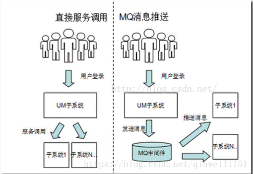

Kafka 是LinkedIn 开发的一个高性能、分布式的消息系统.
用途：广泛用于日志收集、流式数据处理、在线和离线消息分发等场景。
1. Kafka 将消息流按Topic 组织，保存消息的服务器称为Broker，消费者可以订阅一个或者多个Topic。为了均衡负载，一个Topic 的消息又可以划分到多个分区(Partition)，分区越多，Kafka并行能力和吞吐量越高。
Kafka 集群需要zookeeper 支持来实现集群，最新的kafka 发行包中已经包含了zookeeper，部署的时候可以在一台服务器上同时启动一个zookeeper Server 和 一个Kafka Server，也可以使用已有的其他zookeeper集群。
2. ActiviMq消息队列，解决了服务解耦合的动作，缓解了服务并发量很大，造成服务器无法处理的状况。
(kafka、rabbitMQ、activiMQ)其他作用：异步处理、消息通讯、流量消峰、应用解耦
应用场景1：（异步处理）用户注册后，需要发注册邮件和注册短信,
应用场景2：（应用解耦合）双11是购物狂节,用户下单后,订单系统需要通知库存系统,传统的做法就是订单系统调用库存系统的接口.
应用场景3：（秒杀活动）场景:秒杀活动，一般会因为流量过大，导致应用挂掉,为了解决这个问题，一般在应用前端加入消息队列。
转自：https://www.jianshu.com/p/2820561158c4
Kafka 对比 ActiveMQ消息队列：https://www.iteye.com/blog/xiaowei2002-2258845

如何保证消息队列的幂等性？
幂等性：一个请求，不管重复来多少次，结果是不会改变的。
在什么场景会出现消息重复消费？
kafka: 比如说消费端已经消费了 offset=2，offset=3，offset=4 的三条数据，正准备把这个 offset 的值传给 kafka，这时候消费端机器宕机了，这个数据没传过去；重启之后，消费端同步 kafka，kafka 那边消费的记录 offset 还是 1，那么 kafka 会认为之前的 2、3、4 都没有消费过，会把这几个数据在传给消费端；这样消费端这边就重复对这几条数据进行消费了。在数据库里面可能就多了很多重复的数据。像其他的 MQ，也是一样，消费端再返回给 MQ 的时候，当机了或者重启了，那么都会出现重复消费的问题。
每个消息都会有唯一的消息 id。
1）、先查再保存
每次保存数据的时候，都先查一下，如果数据存在了那么就不保存。这个情况是并发不高的情况。
2）、添加消息表
再数据库里面，添加一张消息消费记录表，表字段加上唯一约束条件（UNIQUE），消费完之后就往表里插入一条数据。因为加了唯一约束条件，第二次保存的时候，MySQL 就会报错，就插入不进去；通过数据库可以限制重复消费。
3）、使用 Redis
如果你的系统是分布式的，又做了分库分表，那么可以使用 Redis 来做记录，把消息 id 存在 Redis 里，下次再有重复消息 id 在消费的时候，如果发现 Redis 里面有了就不能进行消费。
4）、高并发下
如果你的系统并发很高，那么可以使用 Redis 或者 zookeeper 的分布式对消息 id 加锁，然后使用上面的几个方法进行幂等性控制。